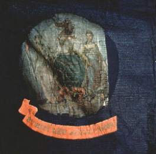
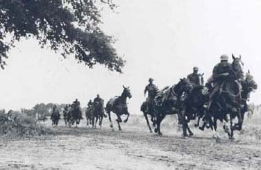
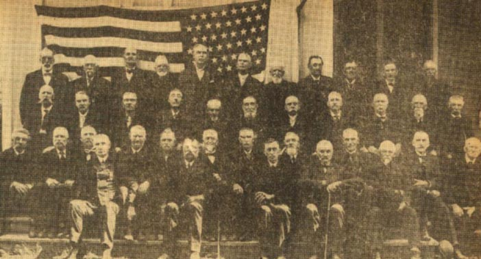

"In the face of the enemy when deploying under heavy and
galling fire, or when charging his lines and entrenchments,
you exhibited such firmness and ready obedience to the
orders of your superiors, that victory crowned your efforts,
and the foe, disheartened, appalled, by such determination
and bravery, was compelled to surrender . . . by a continued
display of such bravery, endurance, and discipline, the 2nd
New Jersey Cavalry will obtain an immortal name in the
history of the war"
--Joseph Karge, addressing the 2nd New Jersey after the
Battle of Egypt Station
George Moulton, my great-great-great grandfather, was
born in Warren County, New Jersey in 1845. The Moulton
family, headed by Gordon and Elizabeth, was probably a third
or fourth generation English clan that migrated to the
United States in the 18th century. Gordon was a Judge of Law
in Elizabeth, NJ, showing that the Moultons were likely
upper-middle class and involved in local politics. Elizabeth
had five children, Sarah, William, Mary, Anthony, and
George. Like many men of his generation, George served in
the Civil War, enlisting in the 2nd New Jersey Cavalry
Regiment on September 6, 1864. The 2nd served a small, but
important role in the Western Theater, engaging in both
guerilla skirmishes and set battles. Since the 2nd did not
participate in the great Eastern battles at Antietam,
Chancellorsville, Gettysburg or the Wilderness, little has
been written of this unit. While these battles were
undoubtedly crucial to the war's outcome, they tend to
overshadow actions in the Western Theater that were equally
significant and dangerous. As one soldier in the 2nd
explained, "our battles in the West are small compared to
the major battles in the East. But in proportion, are just
as deadly." This paper investigates why Moulton and other
Jersey men joined the 2nd Cavalry, their experiences as
"horse soldiers," and why they continued fighting. I draw
from the work of several scholars of the common Civil War
soldier, including Bell Wiley, Reid Mitchell, and James
McPherson. I seek to add to the work these historians have
done on the motivations, experience, and morale of the Civil
War soldier.
An explanation of Civil War New Jersey is needed before
examining the common soldier in the 2nd Cavalry. New Jersey
was often considered the "northernmost of the border states"
for its Democrat and anti-Lincoln sentiment. New Jersey was
the only northern state to reject Lincoln both in the 1860
and 1864 presidential elections. Horace Greeley's New
York Tribune commented, "in no other Free State are
disloyal utterances so frequent and so bold as in New
Jersey." However, New Jersey also had a vibrant Republican
and even Abolitionist segment, leading to battles between
ultra-Republican newspapers and Copperhead prints for public
opinion. The reason for the pro-southern sentiment was
threefold. First, the state depended on Southern markets for
its export goods and imported Southern cotton for textile
mills. Second, in the 1850s, the state's pre-war African
American population sparked controversy because of racism
and a perceived notion that free blacks would take white
jobs. New Jersey was one of the few states in the North that
allowed the capture of runaway slaves. Third, New Jersey was
close to New York City, a "hotbed of Copperheadism" and the
Democratic Party.
Correspondingly, the 1860 election was one of the most
bitter and acrimonious in the state's history. Republican
"Wide Awake" clubs and Democrat "Hickory Men" marched in the
streets, often engaging in violent street battles with each
other and local gangs. Pro-Democrat newspapers urged the
people to vote against the "Black Republican" (Lincoln),
while the pro-Lincoln Daily Mercury called Douglas's
|

The flag of the 2nd New Jersey Cavalry
|
later victory in the state a "product of a band of mercenary
and unprincipled men engaged in the Southern trade . . . if they
had been slaves themselves and every morning had been lashed
into humility, they could not have worked heartier to carry
out the wishes of their masters." Lincoln only lost the
state to Douglas by a mere 4,000 votes. Thus, despite the
notion that New Jersey was a "Democratic Citadel," the state
was sharply divided on political lines and remained so
throughout the war.
When South Carolina seceded on December 20th, 1860, New
Jersey Democrats lent early support to the Confederate
cause. The Democrat Press, for instance, praised South
Carolina for "saving the nation from a worse calamity than
disunion-abolitionism" and called for a "Great Middle
Confederacy" of border-states. The Newark based Daily
Journal even advocated a "junction with the Southern
Confederacy [because] it would place New Jersey in a
position of unexampled prosperity." The situation grew
worse for Unionists in the state when former New Jersey
governor Rodman C. Price urged secession; "I say
emphatically that New Jersey should go with the South, from
every wise, prudential, and patriotic reason. However,
cooler heads prevailed, and most moderate Democrats and
Republicans agreed with the Princeton Standard when
it admonished, "come now, Ex-Governor, do explain . . . that we
may judge for ourselves the chances of escape from this
worse than vandal government of the South." When South
Carolina militia fired on Ft. Sumter, most Democrats joined
pro-Union ranks.
Enlistment
Service did not come until 1863 or 1864 for the members
of the 2nd New Jersey Cavalry. Many had watched their
brothers enlist in the days after the attack on Ft. Sumter,
but were too young to join the army or cavalry themselves.
The invasion of Pennsylvania by Robert E. Lee gave them the
opportunity. Immediately following the Battle of
Chancellorsville, the Federal Congress ordered states to
supply more regiments or be subject to a draft. Charles S.
Olden, the ex-governor, petitioned the state government to
authorize the raising of a second cavalry regiment. After
receiving Olden's petition, New Jersey Governor Joel Parker
signed an endorsement stationing the 2nd New Jersey Cavalry
in Camp Parker, Trenton, New Jersey. However, unlike the
1861 mobilization, New Jerseyans were less eager to join,
having "gained a fuller understanding of the realities and
dangers of soldier-hood" in the first two years of the war.
Moreover, Copperhead soap-boxers like Clement Vallendigham
urged parents to keep their sons at home, condemning the war
as an "unconstitutional affair conducted by black
Republicans."
Despite these obstacles, New Jersey did not have to
resort to the draft in 1863. Why did the 2nd New Jersey men,
many of whom had voted against Lincoln in 1860, refuse to
leave "the South alone so that the two republics could live
in peace?" James McPherson, Reid Mitchell, Bell Wiley
present three different thesis. Wiley argues that men, both
north and south, were primarily motivated by a desire for
adventure and peer pressure. McPherson, on the other hand,
asserts that political ideology was the main factor in
motivating men for enlistment and maintaining morale.
Finally, Reid Mitchell argues that enlistment stemmed from
both ideological motivations and a desire to prove one's
manhood. Mitchell argues, "volunteering in itself was a sign
of coming into manhood--it meant accepting a man's duties to
defend his home and country . . . and signified the first time
away from parental supervision." While the New Jerseyans
in the Second Cavalry offer elements of all three of these
themes, the prime motivator appears to be ideology.
Fort Sumter and subsequent Confederate attacks on
Northern soil sparked a surge of unionist sentiment that
lasted until 1863. George Moulton's hometown of Elizabeth, a
large town on the Hudson River across from Staten Island,
was not immune to this wave of patriotism. The local
newspaper, the New Jersey Journal, reported that
"citizens hoisted Union flags of every size and kind" in
support of the war effort. Crowds also "paraded in the
streets with drums and shouts, visiting the residences of
supposed disloyalists and demanding that they show their
colors." Sumter had stood for national sovereignty, a
symbol of Union Power in the heart of secessionist South
Carolina. The attack on this symbol represented the horror
of secession, spurring Northern patriotism and enlistment.
Copperheadism, as demonstrated by the march in Elizabeth,
was not tolerated in the opening months of the war. Indeed,
James McPherson argues that the threat to the Union provided
a key motivation for joining the war, with one soldier
writing, "admit the right of the seceding states to break up
the Union at pleasure . . . and how long will it be before the new
confederacies created by the first disruption shall be
resolved into smaller fragments and the continent become a
vast theater of Civil War." Thus, "letting the erring
sisters depart in peace" would only spark future bloodshed
and conflict. Better to fight a war than allow the
balkanization of the United States.
New Jerseyans also agreed with Lincoln that the attack on
Ft. Sumter was an assault on "the beacon light of liberty
and freedom to the human race." The New Jersey
Hackensack Journal, for instance, extolled men to "bear
arms in a contest between law and anarchy, between right and
wrong, between the wisest and best government ever formed
and a band of traitors who seek to subvert and destroy it as
a meek offering to the juggernaut of slavery." Here,
stopping the expansion of slavery and saving the Union were
key reasons for enlistment. Years after the Ft. Sumter
incident, the volunteers of the Second New Jersey still
reiterated the themes expressed in 1861, feeling a need to
"stop the destruction of the states." The invasion of
Pennsylvania by Robert E. Lee provided a further a sense of
urgency for joining the Calvary. A volunteer in the 2nd New
Jersey, explained how he rejoiced in hearing that "the enemy
received the greatest disaster ever administered by Union
forces" at Gettysburg. He resolved to join the cavalry
shortly after, believing that the "war might just end at
anytime and there just might not be another war in my
lifetime." Clearly, the ideology of Unionism and free soil
prompted men to enlist.
As highlighted by the last quote, the thirst for
adventure provided the second main motive for fighting. In
addition to fighting for the Union, this volunteer wanted to
experience war and its excitement before it was over. Bell
Wiley explains how, "war, with its offering of travel to far
places, of intimate association with large numbers of other
men, of the glory and excitement of battle, was an alluring
prospect to farmers who in peace spent long lonely hours
between plow handles, to mechanics who worked day in and day
out at cluttered benches . . . " Glory, excitement, seeing new
places, and comradeship were all elements of adventure for
19th century men. One New Jersey volunteer reported that the
Civil War provided adventure found in a "dozen lifetimes of
ordinary existence." To men who worked a plow on the farm
or a machine in the factory, the dashing life of a
cavalryman seemed like the excitement of a lifetime.
Socrates Wamsley, a former farm-boy and 2nd Cavalry
volunteer, expressed dreams of "wearing gold striped
uniforms and riding horses into battle wielding real cavalry
swords!" Indeed, he expressed nothing but "happiness" at
"being away from home for as long as for three years."
Thus, the promise of a glorious war full of heroism and
dashing deeds prompted Wamsley to leave his dull, hard life
on the farm and join the 2nd New Jersey.
In the words of Bell Wiley, "there was also a large group
of those who volunteered not from any great enthusiasm, but
simply because enlistment was the prevailing vogue."
Directly tied in with this peer pressure is Reid Mitchell's
argument that volunteering proved one's manhood. Manhood in
the 19th century meant defending both the individual family
and the "national family" of the Union. Enlisting and
displaying bravery on the battlefield was a validation of
this manhood. Even though the enlistment fervor subsided in
the two years after Ft. Sumter, soldiers in the 2nd
expressed both peer pressure and a need to prove their
manhood as reasons to join the cavalry. One Second New
Jersey man explained, "my friends kept jawing like hornets
about fighten [sic] them rebs. I thought I'd be a humdinger
to them and my girl . . . so I joined up." Here, the soldier not
only felt pressure from his friends "jawing like hornets
about fighting," but also from his "girl," who strongly
encouraged him to enlist. Evidently, she considered concepts
of manhood and pride intertwined with joining the Calvary.
Thus, enlistment proved "manhood" to peers, family, and
potential lovers. The placement of men in the 2nd New Jersey
alongside friends from Warren County and Elizabeth also
increased peer pressure while lessening the fear of leaving
home. Reid Mitchell explains how this method of recruitment
was "not accidental," instead providing a military
experience that reminded soldiers of civilian life.
Socrates Wamsley reports how his "scuttlebutt" mess was made
up of men he knew, lessening the feelings of isolation and
homesickness. Entering the 2nd provided no solution if a New
Jersayan joined to "forget" or escape his home culture.
A final reason for joining the 2nd New Jersey not
explained by Wiley, McPherson, or Mitchell was the hope for
self-betterment. Self-betterment, the quintessential
American goal to many 19th century men, meant escaping the
hardships of common labor and owning land. The Calvary
provided an ample way to achieve this goal because its pay
exceeded the income of many poor workers, encouraging them
to enlist. By 1863, New Jersey provided a substantive bounty
of $100 dollars in addition to a combined federal and state
salary of 15 dollars a month. In 1863, the average
unskilled laborer earned the equivalent of $30,000 dollars
today, while Calvary earnings combined to provide the modern
equivalent of $54,940.35. While Bell Wiley finds that
"Cavalry units seem to have held special attraction for the
scions of first families," the 2nd New Jersey appears to
have been a mix, with many men enlisting for monetary
reasons. While there were sons of federal judges like
George Moulton, there were also poor farmers like Socrates
Wamsley and a soldier named "T.C." Wamsley, for example,
expresses surprise at the "long lanes of Oak trees and
Magnolias and the beautiful French and Spanish structure" of
the luxurious houses in Natchez, Mississippi. Being a poor
farmer from Warren County, Wamsley had never experienced
such lavishness. In turn, Wamsley's friend "T.C" speaks in a
rough "hillbilly" voice, and judging by his remarks, was
barely literate. Both desired to save up enough money to
move to Kansas and buy a farm after the war. T.C, for
instance, explains, "that thar [sic] Kansas is a fur piece
from Jersey . . . when we'all gets home, I'm shedden [sic] this
here uniform, and the only'est [sic] sashaying [slashing]
here-abouts is a gonna be trampen behind a plow." While we
do not know if T.C. ever moved out to Kansas, he and many
others were motivated by a desire for self-betterment.
In George's case, his mother decided in 1861 that a 16
year old was too young to leave home and go off to war.
According to Mitchell, many soldiers viewed "preserving the
Union as the duty owed to the generation behind them, to
their mothers, and to the generation to come," with many
parents feeling that "to be a good son meant to be a good
citizen soldier." But Elizabeth Moulton probably wanted
him to wait till he was 18. The evidence for this is on
George's "Declaration of Recruit" sheet, where no parental
signature or writing exists in the "Consent in Case of
Minor" section. George likely volunteered for monetary
reasons as well, perhaps wishing to save enough money to
move out to Kansas after the war. Even though his family
was upper-middle class, George worked as a "laborer," and
likely wanted to make more money. On the "Declaration of
Recruit" form, the recruiter wrote that Moulton was entitled
to a $100 dollar bounty, to be paid in three installments of
$33.33. To save money and use familiar equipment, Moulton
provided his own horse and riding gear, items that the
federal government provided but charged for. Given that the
cavalry provided food, arms, munitions, and clothing free of
charge, soldiers like George could theoretically save much
more in Union service than they could as unskilled laborers.
George's $235 army earnings allowed him to acquire savings
for later endeavors, similar to how the GI bill of the 1940s
allowed soldiers of a later generation to attend college.
George's enlistment date of September 6, 1864 is also
significant, suggesting that he was motivated by Unionist
sentiment. The first half of 1864 witnessed widespread war
weariness in the North, as the causalities seemed to mount
without any real gains by Union forces. The appearance of
Jubal Early's division (C.S.A) in the suburbs of Washington
D.C. alarmed northerners and showed them that the war was
far from over. "Copperhead" or "Peace" Democrats were also
agitating for an "immediate unconditional armistice to be
followed by a peace conference." These anti-war
politicians were especially active in New Jersey, where the
local Democratic papers denounced Republicans and the
Lincoln administration as "monsters and barbarians intent on
exterminating the South, killing half the men in the North,
and prolonging the war for 30 years." The Democrats
selected George McClellan, the infamous "Boy General," to
run for President on August 31st. In New Jersey, campaigning
began instantly, and "politics became the order of the day"
with torchlight parades and bitter newspaper feuds. George
Moulton and his family were undoubtedly aware of the
political debate going on in the state; hearing politicians
like Vallendigham give vitriolic condemnations of the war.
The fact that George enlisted 6 days after McClellan's
nomination, in the midst of the political hubbub, shows that
the Moultons were either Republican or staunchly unionist
Democrats.
Men like Moulton who had no previous wartime experience
encountered a rude awakening in the Calvary. One New Jersey
volunteer commented, "shoulder your musket, join us in our
vicissitudes and hardships for a while, and the romance of a
volunteer's life will fade a like a fog before the sun."
The men of the 2nd Cavalry Regiment began their war
experience in Trenton, NJ, reporting for camp shortly after
they were recruited in late July 1863. As soon as the 890
cavalrymen reported to Camp Parker, they were mustered into
three-year service contracts. Although some were
experienced horseman, they still had to learn the fine
points of cavalry maneuvers, firing, using sabers, bugle
signals, and obeying officers. For many privates, the latter
proved to be the hardest part of the training. The 19th
century United States was a highly individualistic society,
with each volunteer unaccustomed to taking orders from
higher-ups. Wiley shows how "men in the ranks were inclined
to regard orders as personal affronts," especially when
issued in the "brusque authoritative tone of superior
officers." After all, why were privates inferior to men
who had been their equals in civil society? Training
consisted "of drilling from sun up to sun down, six days a
week with horse and foot maneuvers, saber drills and
learning the severe rules of military discipline."
Troopers ate and slept with their "messmates" or
"scuttlebutt" at night, retiring early to repeat the routine
all over again. While resented by volunteers, 2nd New Jersey
soldier Socrates Wamsley later admitted, "the training would
show up under the stress of combat conditions, where other
regiments and companies failed to execute orders, reverting
to confusion and chaos."
The training the 2nd New Jersey received differed greatly
from earlier cavalry units. In the opening months of the
war, Bell Wiley explains how "initial efforts [at training]
were exceedingly awkward--and this maladroitness often
persisted unduly because of the lackadaisical attitude of
the men, and because of the inefficiency and ignorance of
self appointed officers." The reason for this
"lackadaisical attitude" stemmed from the perception of the
war at the time. Since the war was supposed to be over
quickly without much bloodshed, why bother with training?
The early cavalry tactics were also designed to provide
maximum glory and gallantry, not taking into account new and
deadly weaponry. While a frontal cavalry charge might be the
glorious way to fight during Napoleon's time, in the Civil
War it was suicide. Artillery and rifled muskets with minie
balls could wreck carnage on any such charge. During the
Peninsula campaign and the Battle of Second Manassas, Union
cavalry sustained heavy losses and proved no match for the
Southern units under Jeb Stuart.
In 1863 and 1864, Grant and the Union Army drastically
changed the nature of the Union cavalry, turning it into an
impressive fighting force. Grant argued that cavalry
regiments should be used as raiders, much like the
Confederate units under Jeb Stuart and John Mosby. Grant
instructed, "nothing should be left to invite the enemy to
return, take all provisions, forage, and stock wanted for
|

Members of the 2nd New Jersey Cavalry in 1863
|
the use of your command. Such as cannot be consumed,
destroy." Through the destruction of southern supplies and
infrastructure, Grant sought to end both the Southern will
and means to fight. Tactics also improved during set piece
battles. Instead of always charging on horseback, cavalry
often dismounted to better utilize natural shielding. By the
battle of Gettysburg these tactics were well in place. Here,
dismounted cavalry held the Union position on the first day
by taking cover on several small hills. In 1863, the Union
also started aggressively sending out their cavalry to meet
Confederate guerillas and mounted units. Charles Russell
Lowell, a cavalier from Massachusetts, thoroughly approved
of these new tactics. "It is exhilarating," he cried out,
"to see so many cavalry about and to see the things right
again." From 1863 to 1865, the men of the 2nd New Jersey
experienced all three types of combat.
The 2nd New Jersey Cavalry, under the command of Colonel
Joseph Karge, departed for the Eastern Theater on October
5th, 1863. Karge, a German emigre and Princeton University
Professor who had served in the Prussian Cavalry, seems to
have been liked by his men. In addition to "imposing the
expert knowledge he had acquired in the Prussian and U.S.
cavalries," Karge instituted a reading program in which the
"more educated enlisted men would teach the uneducated horse
soldiers to read and cipher." The latter measure was very
popular and allowed uneducated men to receive a rudimentary
education in the army. Upon arrival in Washington D.C, the
regiment came under the command of General Stoneman's
Cavalry Division in the Army of the Potomac. After a brief
stay in Washington on October 6th, the 2nd New Jersey headed
to Camp Stockton Virginia, near present day Alexandria.
Despite hearing stories of cavalrymen dying in battle or
succumbing to a worse fate at Andersonville or Libby Prison,
the men of the 2nd Calvary were generally eager for combat.
A New Jersey volunteer, upon viewing a massive consortium of
New Jersey Units, exclaimed, "to see artillery, cavalry, and
infantry drawn up in line on rolling land is a very nice
thing to look at." However, when the first "Baptism of
Fire" (combat experience) arrived, soldiers experienced
extreme anxiety. Bell Wiley describes how
"The dominant sensation [before combat] was that of
extreme nervousness . . . some sought to conceal or escape their
keyed-up condition by joking or by casual conversation, but
with little success. Perspiration dotted the brow, a dull
emptiness seized the stomach, and breathing became
difficult . . . the craving for movement, for action, was so great
as to seem intolerable."
Most accounts written by New Jersey men seem to echo
Wiley's description, with one soldier reporting, "I got so
sick at the stomach that I thought I should have to fall out
of the ranks to relieve myself." Though soldiers were able
to lessen this "pre-battle anxiety" as they witnessed more
conflict, the experience was always unnerving.
The 2nd New Jersey experienced its "Baptism of Fire"
shortly after arriving in Virginia. On October 17th, John
Mosby and his Confederate Guerillas attacked Company A (the
unit George Moulton would later join) while it was returning
from escort duty in Fairfax, Virginia. Mosby was originally
a member of Jeb Stuart's cavalry regiment, but felt the
conventional army too restricting for his designs. "The Grey
Ghost" (Mosby) and his raiders soon became infamous in the
Shenandoah Valley for terrorizing southern unionists and
massacring Union supply convoys. George S Patton of the 28th
Iowa, in 1864, gave a chilling account of an attack by
Mosby:
"There was a train coming through the other day and the
Chief commissary of this department and Medical director of
the department was along and when, they got within three
miles of here they thought they would be safe to come into
camp. Them and 27 other men only got a little ways ahead of
the train. Mosby and sixty of his men bulged out at them.
Killed and wounded all but 4 of them and there happen [sic]
to be a squad of our cavery [sic] going out with a forage
train that was close enough to see what it was and got there
in time to save 4 men."
By the end of the war, the North was so outraged by
Mosby's actions that he was declared an outlaw and not
allowed to return to the United States until a pardon by
President Grant in 1866. Due to supply difficulties, no
carbines had been issued to the New Jersey greenhorns,
forcing them to take on Mosby's veteran guerillas with
sabers. The company was routed, with the Captain, two
sergeants, and one private taken prisoner. Only the Captain
managed to survive the ordeal, escaping from Libby Prison
over a year later. One can only imagine what happened to
the other men who were left wounded on the field or taken
prisoner by Mosby. After this disheartening experience, the
2nd New Jersey transferred to the Western Theater and joined
the Army of the Southwest.
Stationed in Tennessee from November 1863 to December
1864, the regiment soon gained much needed combat
experience. During this time, the 2nd experienced Guerilla
fighting and skirmishes with Confederate cavalry, but few
set-piece battles. Guerilla fighting in Eastern Tennessee
region was some of the nastiest in the entire war, with
southern partisans terrorizing the large numbers of unionist
citizens in the region. The 2nd New Jersey was largely
successfully in their exploits in this area, dispersing
small gangs of guerillas and routing Confederate cavalry
units. The regiment also participated in a raiding
expedition beginning in Aberdeen Mississippi on February
19th, 1864. Here, the 2nd scored a victory over a
Confederate cavalry regiment and proceeded to occupy Prairie
Station, Mississippi. At Prairie, the 2nd destroyed an
immense quantity of corn and supplies destined for General
Hood's beleaguered troops defending Atlanta, Georgia.
The following day, the cavalry continued its advance,
engaging in several small but fierce skirmishes with General
Nathaniel Bedford Forrest's cavalry at Okolona, Ivy Farm,
and Tallahatchie. Forrest was known both for his innovative
cavalry tactics and sheer brutality. Shortly after his
conflicts with the 2nd New Jersey, Forrest embarked on a
raid into Western Tennessee and Kentucky. On April 12th,
Forrest's troops attacked a Union outpost in Tennessee
called Ft. Pillow. Two hundred and ninety five Tennessee
Unionists and 262 US Colored Soldiers defended the fort for
hours against the Confederate onslaught, finally
surrendering after Forrest stormed the fort. After
surrendering, Forrest's men ordered the African American
soldiers down to a nearby river and murdered them. Only 62
out of the initial 262 troops lived to tell the story.
After fighting Mosby and Forrest, the New Jersey troops
developed a hatred for rebel soldiers. One remarked: "[I
have seen] a sad sight...from appearance they had been
stripped of all their clothing and when in the act of
kneeing in a circle they were murdered by the would be
'CHIVALRY OF THE SOUTH'." For the rest of the war, General
Forrest was the main target of the 2nd New Jersey. Karge
referred to him as a "rat," while Wamsley expressed joy at
the death of N.B. Forrest's brother, "Colonel Forrest."
The 2nd's performance against the Guerillas and Forest
showed that they had evolved into an effective fighting
unit, nevertheless horrified and outraged by the
depredations of war.
After its successes in the eastern Tennessee guerilla and
cavalry conflicts, the 2nd New Jersey participated in
several pitched battles, suffering their worst defeat of the
war at the Battle of Guntown. On June 10th, 350 men from the
regiment were dispatched to remove Confederate troops at
Guntown, Mississippi. For unexplained reasons, General
Sturgis (the commander of the operation) ordered the Second
New Jersey to charge an entrenched Confederate position. The
ensuing slaughter resulted in the loss of 8 out of 17
officers and 130 out of 350 men, almost a 40% death rate.
After experiencing these horrific losses, the 2nd was still
composed enough to protect retreating Union soldiers from
Confederate pursuit. Union army officials reporting on the
event deemed the Calvary's conduct "creditable in the
highest degree." However, General Sturgis was lambasted as
an "imbecile" whose disgraceful actions earned him the
hatred of the New Jersey Press and the 2nd Regiment.
Following this disaster, the Karge ordered Company A back to
Camp Howard, Tennessee in September 1864 to replenish its
strength by receiving new recruits from Trenton New Jersey.
George Junkin Moulton was one of these new recruits.
The process of placing raw recruits alongside seasoned
veterans allowed experienced soldiers to indoctrinate new
soldiers into the cavalry. The 2nd New Jersey was unusual in
adopting this procedure. Many states ordered new regiments
to be created entirely from volunteers instead of placing
recruits into a unit of veterans. Given the 2nd's
performance in the ensuing months, this procedure was
clearly effective. The first action my ancestor participated
in was a raiding expedition into Arkansas and Mississippi
under Brigadier-General Grierson. During the ride south, the
cavalry encountered terrible conditions around Osceola,
where they were forced to cross a swamp nearly 18 miles in
length. Mud and water often reached the saddle-girths of
horses and many men caught malaria from mosquitoes. The men
finally reached Big Lake Arkansas on November 29th, where
they surprised a Confederate supply train and captured 900
muskets and took 13 prisoners. Continuing their foray, the
Second surprised a contingent of confederates at Verona,
Mississippi on December 25th. In their biggest capture of
the war, the Second New Jersey took "eight buildings filled
with fixed ammunition estimated at 30 tons, 5,000 stands of
new carbines, 8,000 sacks of shelled corn, a large quantity
of wheat, and immense amount of quartermaster stores,
clothing camp and garrison equipage, and a train." The
Confederacy desperately needed these supplies for Robert. E.
Lee's Army of Northern Virginia and John Bell Hood's forces
in the southeast.
Only three days later, the 2nd New Jersey Cavalry
participated in the Battle at Egypt Station, Mississippi.
Egypt Station was an important supply depot and railroad
junction, supplying the remaining forces of the Southern and
Western Confederacy. The goal of this assault was to
"eliminate" General N.B. Forrest and "to find and destroy
railroad, telegraph, communications, any and all supplies
that would cripple Confederate forces." George Moulton's
Company A provided a key role in the engagement. First,
Colonel York ordered a mounted charge on the enemy's center
with flank attacks on either side of the Confederate breast
works. Yorke describes how, "immediately after this advance,
firing opened from a stockade on our right, that before had
been unperceived by me. The effect of this fire was
disastrous. After the death of several officers, the men
became disheartened and turned in orderly retreat."
However, the 2nd quickly regrouped for a second assault.
This time, Yorke ordered Companies A, M, L, and E to
dismount and advance under heavy fire to within "ten paces
of the fortification, where they found temporary shelter
behind a fence." Yorke then directed the rest of the
Regiment's companies to advance on the left side of the
fortification, after which he sounded a "bugle for a general
advance." At this moment, "the squadrons on the left moved
forward, charging directly through the village and sweeping
round in rear of the fortification while the dismounted
burst from their cover and broke down the door, and dashed
within the enclosure, which immediately surrendered." The
men of Company A were the first to "dash in the enclosure"
and took the brunt of the fire. George Moulton's commanding
officer, Lieutenant Burd, and seven enlisted men were killed
instantly when they stormed the fort. As a reward for this
sacrifice, Company A received the honor of capturing the
"Confederate colors," which were shipped back to the New
Jersey capitol.
At Egypt Station, New Jersey succeeded in capturing two
field officers, nine line officers, and 600 Confederate
infantry, a strikingly large amount for a unit that numbered
slightly under a thousand men. However, they also suffered
heavy casualties. Three officers and sixteen men were killed
while 77 were wounded, 39 of which were left on the
battlefield for "want of conveyance." Very few of those
left on the battlefield survived, most dying a slow and
painful death without water or relief. Despite these
horrors, the expedition was highly successful, and Colonel
Karge remarked, "the amount of damage done the enemy on this
raid was enormous, having destroyed depots, company stores,
railroad locomotives and cars, and an immense amount of arms
and ammunitions."
For the remainder of the war, the regiment erected camps
near Natchez and Vicksburg, Mississippi. From these
locations, the 2nd fought small battles in Alabama at Mobile
on April 8, 1865, Fort Blakely on April 10, Blakely on April
12, and Manningham on April 23rd. The last two battles are
remarkable because they occurred after Lee unconditionally
surrendered to Grant on April 9. This happened for two
reasons. First, news of the surrender didn't reach the
backwoods areas of Alabama and Mississippi until the end of
April. Second, C.S.A President Jefferson Davis and the
remaining Confederate forces tried to carry on the struggle
in the Deep South after Lee had surrendered. Socrates
Wamsley reports that the 2nd did not receive news of the
surrender until April 19. Unfortunately for the 2nd New
Jersey, the continuation of hostilities meant more dying and
suffering. At the engagement in Mobile, George Moulton was
shot in the left forearm. The unit's surgeon described the
wound as "discharging fluid," making the soldier incapable
of riding a horse. George managed to survive both the
wound and a month at a Union hospital in Vicksburg,
requesting a disability discharge on May 31, 1865. My
great-great-great grandfather's request was granted and on
June 29, he was mustered out at Vicksburg.
In two years of service, the 2nd's combat actions played
an integral role in the Western Theater. First, the
successful raids on Confederate supplies caused great harm
to the armies under General Hood and Robert E. Lee. The
Confederacy depended on arms, munitions, food, and manpower
from the Western states of Mississippi, Arkansas, Alabama
and Missouri. When the Second cut off these supply lines,
the Confederate armies in the Eastern Theater suffered
greatly, a factor that led to their eventual defeat.
Secondly, the New Jerseyans helped disperse guerilla
activity and rebel cavalry in Eastern Tennessee, helping end
deadly Confederate raids and brutal partisan conflict. The
large battles the 2nd New Jersey participated in were also
key to the war's outcome. For example, the Battle of Egypt
Station ended Mississippi's involvement in the war, and
ensured that no more supplies would come from this region.
Additionally, the 2nd's help in capturing Mobile Alabama,
the battle where George Moulton was shot in the left arm,
left the Confederacy with no seaports or major transit
centers. While the 2nd only served two years, their role was
invaluable in the Western theater and the larger war.
Many men in the 2nd New Jersey were scarred by their
experiences in war and combat, erasing any delusions of the
"glory" of war. Socrates Wamsley, explains how at one
battle, "we could hear and see the results from the carnage
caused by the cannons. Screams coming from below and around
us, as we saw limbs blown away, with sounds of great pain,
extreme fear, or even hope for death. Yes, the screams
sounded like they were coming from the very gates of hell."
This experience prompted Wamsley to exclaim, "my personal
thoughts were on how very foolish and simple I was just a
year and a half ago . . . so immature to believe in the glory and
splendor." After experiencing combat, men were no longer
motivated by adventure and glory. However, the combat record
shows that the Second New Jersey Cavalry was a motivated and
highly successful unit. Through numerous deaths and
casualties, the men of the 2nd kept fighting until the end
of the war. What provoked the men of this regiment to stay
and fight through one or two years of "hell?"
I maintain that both cause and comrades motivated the
troopers. In terms of cause, they fought for the
"maintenance of law and order . . . to assert the strength and
dignity of the government against the threat of dissolution,
anarchy and ruin." To the soldiers, love for the Union
meant upholding the ideals of liberty and democracy that
they believed were threatened by rebellion. Defending this
union was a "familial duty," owed to the revolutionary
generation who created the United States and to future
generations who watched their fathers go off to war. Until
the rebellion ended, the 2nd New Jersey soldiers stayed in
their regiment. This passion was demonstrated in the 1864
Presidential Election, where previously Democrat soldiers
cast votes for Lincoln in large numbers. Nationwide polls
showed that nearly 75% of soldiers voted for Lincoln, with
New Jersey soldiers echoing similar opinions. Had New Jersey
allowed its 60,000 plus troops to vote from the field in the
1864 election, Lincoln might have won the state.
After 1863, the men of the 2nd also fought for black
freedom. Initially, New Jersey's white troops exhibited
racism against blacks they encountered in the South.
However, after personally witnessing the horror of slavery,
even some Democrats were convinced of the institution's
depravity. One New Jersey doctor wrote of one occasion when
slaves seeking freedom in Union lines had been sent back to
their master, viewed to be a coquettish southern belle. The
doctor was later horrified when the woman stripped the
slaves, whipped them until they were bloody and then set her
bulldogs on them. The incident was enough to make the
doctor, who initially claimed he had "nothing to do with
abolitionism," seriously reconsider his views. Thus, in the
words of one cavalryman, the 2nd was unwilling "to have
peace, unless the traitors [laid] down their arms and there
was freedom for the black man."
The second motivator was the loyalty soldiers felt
towards their comrades and home community. According to
historian William Gillette, "teamwork not only strengthened
individual morale, the units cohesiveness, and overall
effectiveness, but also increased the chances of survival."
Here, the bonds of comradeship kept men fighting for each
other and the pride of their regiment. In fact, the men of
individual companies often considered their group as a
substitute family. Deserting the army meant leaving behind
the family one had fought for and suffered with.
Additionally, if a trooper behaved disgracefully in combat,
the account would soon reach Elizabeth. Mitchell describes
how, "Newspaper articles reported their exploits, homefolk
sent and received letters, soldiers returned home on
furloughs, and civilians even visited their friends and
family in the army." Thus, family members at home
scrutinized the actions of the 2nd Cavalry, ensuring that
the regiment performed bravely or face public ridicule.
While soldiers often resented the naivety towards combat
from those on the homefront, the connection also ensured
that soldiers had a link with the people they were fighting
for. The home community was thus extended into army life;
motivating soldiers to fight for the future of their
families back home. Hence, troopers in the 2nd Cavalry
fought not only for ideological reasons, but to support
their families, both in the army and at home.
What happened to the 2nd New Jersey men after the war?
After studying the lives of my-great-great-great grandfather
and his comrades, a pattern emerges. George Moulton,
Socrates Townsend Moulton, and perhaps "T.C" moved out to
become "pioneer settlers" in Kansas, gaining land from the
1862 Homestead Act. The reason for this migration likely
|

A reunion of the 2nd New Jersey Cavalry in the 1880s
|
stemmed from the 2nd's combat experience in Kansas. During
one of their many raiding expeditions, the 2nd crossed over
the Missouri border into Kansas to chase Confederate General
Price's troops. While the fighting with Price was nasty, the
New Jerseyans were impressed by the soil and open space.
Socrates reports after the battle, "we were for sure glad to
be away from the Jayhawker States . . . however there was
something I liked about Kansas, I said that I would return
there someday when the war was over." George Moulton
provides a great example of one such transition to farm
life, moving out to Marion Kansas in 1865 "carrying the
effects of wounds inflicted in the Civil War."
The "wounds" Civil War soldiers carried were not only
physical in nature. Indeed, many veterans struggled to deal
with their wartime experience. For years after the war, the
horrors of war were still too raw for discussion. However,
as they grew older, veterans began to evaluate the war's
significance in their lives. Historian Earl Hess argues that
there were four different types of soldier's remembrances.
First, a large amount of soldiers "recalled and reasserted
their faith in the cause that had impelled them to enlist in
1861." Second, a few veterans rejected the cause,
"believing that ideology and patriotism were hollow
incentives for a war and that their lives had been warped by
their battle experiences." Third, another group similarly
rejected the cause but used "devotion to comrades" as a
basis for "a satisfying view of their war experiences."
Finally, "a fourth group of authors avoided the dark side of
their war experiences as much as possible in their memoirs,
preferring to concentrate on the 'good' aspects such as
amusing camp stories, the excitement of living outdoors, and
the novelty of military life."
Both Socrates Wamsley and George Moulton belonged to the
first group. While Wamsley regrets his initial naive
enthusiasm for war, he nevertheless justifies his reasons
for enlistment and expresses faith in the cause. Wamsley
also explains combat in great detail, having come to terms
with the horrors he experienced in battle. Moulton's postwar
life also demonstrates that he valued his Civil War years
and the Union cause. For the first three years, George
remained active in the army, serving in the state militia
and the 19th Kansas Cavalry. Moulton was also involved in
veterans' affairs, attending a 1912 Grand Army of the
Republic march in Washington D.C. During these numerous
G.A.R events of the late 19th and early 20th century, Union
veterans reaffirmed the righteousness of their cause, sought
to convince the rest of society of their sacrifice, and
lobbied for veterans' issues. As a result of the G.A.R's
efforts, Moulton received a sixteen-dollar a month pension
from the US Government for the wound sustained at Mobile
until the end of his life. George Moulton also continued to
be motivated by idealism and the hope for a better country.
In the 1880s and 1890s, George, like many farmers in Kansas,
became involved with the Populist movement for economic
justice, direct elections, and an end to monopolies.
George's farm ultimately proved successful and the Moulton
family remained there long after his death in 1927 at the
age of 82.
Source: History 191 Student Adam Dean
|